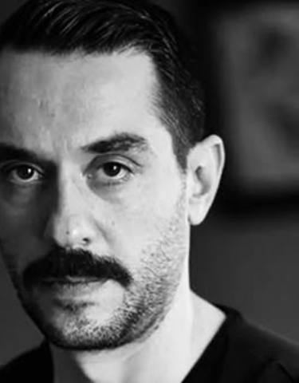

> HAKKIMDA

Emir Benderlioğlu (1979, Ankara), sanat eğitimini Ankara Anadolu Güzel Sanatlar Lisesi’nin ardından Hacettepe Üniversitesi Grafik Tasarımı Bölümü’nde tamamladı. Resim, illüstrasyon ve hareketli görüntü alanlarına uzanan üretimi, farklı görsel anlatım biçimlerini bir araya getirir.
Ankara’da kamu kurumları ve özel kuruluşlar için grafik tasarım, videografi, illüstrasyon, iki ve üç boyutlu animasyon alanlarında çalıştı. 2004 yılında İstanbul Uluslararası Animasyon Festivali’nde, Yüzyılın Yazgısı adlı kısa animasyon filmiyle Jüri Büyük Ödülü’nü kazandı.
2012 yılında Ankara Türk-Amerikan Kültür Merkezi’nde düzenlenen 3 Kuşak Benderlioğlu Karma Resim sergisinde yer aldı. Atıf Benderlioğlu, Reha Benderlioğlu ve Babür Benderlioğlu’nun çalışmalarını da buluşturan sergi, aile içinde kuşaklar boyunca sürdürülen resim pratiğine ortak bir bakış sundu.
Emir Benderlioğlu, Hasan Sarıtaş Gallery tarafından temsil edilmektedir.
> İLETİŞİM
INSTAGRAM:
> @emirbenderlioglu
> @emirbenderliogluart
HASAN SARITAŞ GALLERY:
> 0542 235 78 56